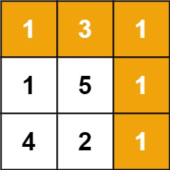

64. 最小路径和
网格 DP 滚动一维：dp[j] = min(上一行同列, 本行左邻) + grid[i][j]，首行首列只能单向累加。
思路
dp[j]滚动一行用：进到第i行之前，它正好是上一行第j列的答案。- 递推
dp[j] = min(dp[j], dp[j-1]) + grid[i][j]：更新前dp[j]是「上」，dp[j-1]已是本行的「左」。 - 首行只能从左来（一路累加），首列只能从上来（逐行累加），先特殊处理；内层
j必须从左往右扫，别把还要用的上一行提前覆盖。 - 答案就是
dp[n-1]。
图解
最优解
1class Solution {2 public int minPathSum(int[][] grid) {3 int m = grid.length, n = grid[0].length;4 // dp[j]：走到当前行第 j 列的最小路径和5 int[] dp = new int[n];6 dp[0] = grid[0][0];7 for (int j = 1; j < n; j++) {8 dp[j] = dp[j - 1] + grid[0][j]; // 首行：只能从左来9 }10 for (int i = 1; i < m; i++) {11 dp[0] += grid[i][0]; // 首列：只能从上来12 for (int j = 1; j < n; j++) {13 // dp[j] 旧值是上一行（上），dp[j-1] 已是本行（左）14 dp[j] = Math.min(dp[j], dp[j - 1]) + grid[i][j];15 }16 }17 return dp[n - 1];18 }19}题目
给定一个包含非负整数的 m x n 网格 grid ，请找出一条从左上角到右下角的路径，使得路径上的数字总和为最小。
说明：每次只能向下或者向右移动一步。
示例 1：

输入：grid = [[1,3,1],[1,5,1],[4,2,1]] 输出：7 解释：因为路径 1→3→1→1→1 的总和最小。
示例 2：
输入：grid = [[1,2,3],[4,5,6]] 输出：12
提示：
m == grid.lengthn == grid[i].length1 <= m, n <= 2000 <= grid[i][j] <= 200
题面取自力扣当前版本。
数据快照 2026-11-04。题面版权归力扣所有，本站点仅供本人学习使用，请勿对外发布。